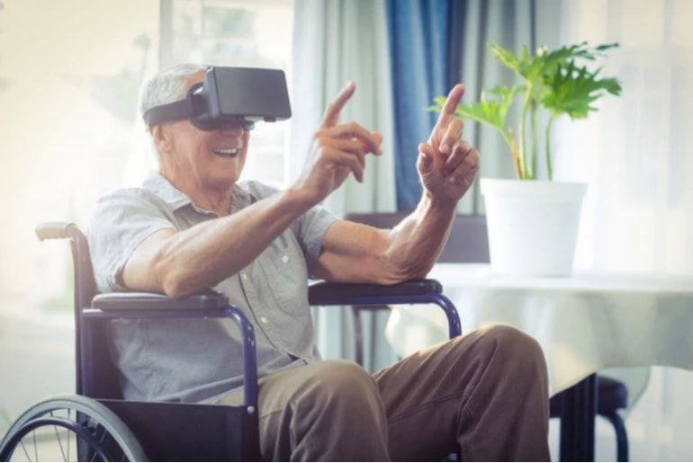
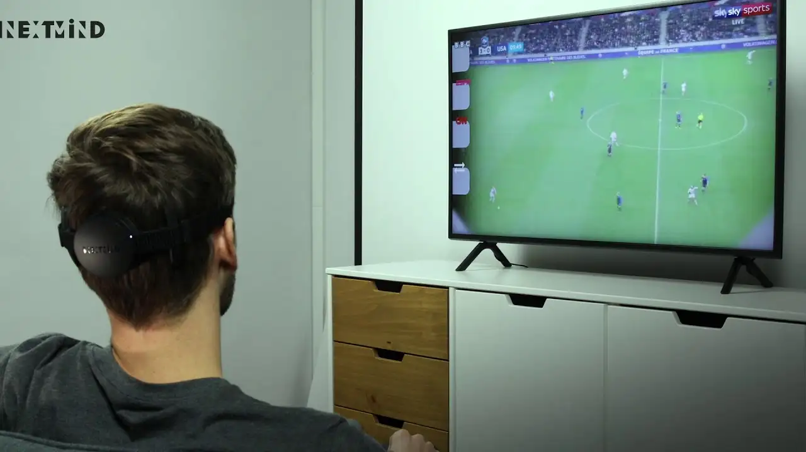

Características
NextMind es un dispositivo capaz de controlar objetos usando solo la mente. Consta de una diadema de 9 electrodos que miden cada interacción del cerebro para poder así automatizar tareas. El dispositivo se asienta de forma segura en la parte posterior de la cabeza para que el usuario pueda moverse libremente y controlar objetos.
Este dispositivo se encuentra aún en una etapa de desarrollo.
Batería de 10 horas de duración y un precio de salida al mercado de $399.
El cliente potencial para este dispositivo son las personas con movilidad reducida. Es un sector del mercado que puede obtener los mayores beneficios de esta herramienta por su característica de lectura neuronal.
Funcionalidad
Este dispositivo recibe ondas cerebrales a través de Bluetooth. Se basa en algoritmos que combinan modelos de aprendizaje automático y neurociencia. Este sensor detecta la actividad cerebral y convierte algoritmos en comandos digitales.
Es complementario a los sistemas de realidad virtual como las gafas VR. Y el objetivo de este sensor es que el usuario sea capaz de controlar las gafas de realidad virtual con la mente. Esto quiere decir que no sería necesario cambiar lo que proyectan las gafas mediante un dispositivo externo porque el control residiría en la mente del cliente en cada momento.